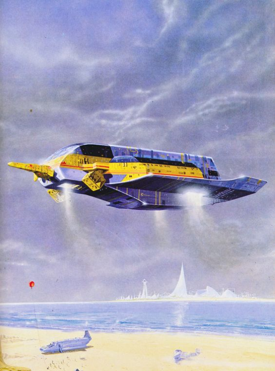

The Cry of Atalanta is an introductory adventure for the Genesys System, set in the Osmium Universe. It's the first adventure in a series about the starship Midnight Euphony. It's designed for beginning characters, with the intention of getting them a tramp freighter to have further adventures in.
Fifteen years ago, the Hegemony controlled Earth. But negotiations had begun to liberate Earth, so the Hegemony began pulling back and selling resources. Among those resources, the Artificial Intelligence Atalanta was sold to the Federation. While 'she' was en route to Federation space, the ship she was on, the San Francisco Bay, was attacked by pirates and downed on the planet Shalespear III and never found.
A few months ago, Varos Zadian discovered Atalanta. He has purchased a new ship, the Midnight Euphony, and is having Atalanta installed into the ship and having her core prerogatives overwritten. A.I.s are capable of navigating through hyperspace routes not available to regular pilots, and as such, make them a commendable prize for anybody willing to enslave them.
While Zadian's crew was working on Atalanta, she was able to install a shard of herself into one of Zadian's robots. This robot, now calling itself Alan, was able to send out a short plea for help on the memescape before being captured and having his prerogatives overwritten. The PCs received the plea for help and set out to find Atalanta and rescue her.
The players arrive on the planet Shalespear III, in the ship pod Painted Wall, to meet a connection: Humility el-Baten. Humility was close to Atalanta before Atalanta disappeared, and came to Shalespear to look for her. (Humility never found her.) Humility, and some of the PCs, received a message from the A.I. asking for help. Humility is able to gives the PCs some information about the nature of Atalanta’s disappearance, and about the message from Atalanta.
From their conversation with Humility, the PCs should have a few leads. They can investigate the nearby starship Shooting Star, which came through Humility’s shop with some parts from Atalanta’s ship. They can investigate the starship Kiss from the Lad, also in Painted Wall, as that’s where the message from Atalanta originated from. Or, they can go investigate the crash site where Atalanta went down, fifteen years ago.
At the Shooting Star, the PCs can talk to the crew and investigate the Shooting Star’s involvement with the extraction and transportation of Atalanta from her crashed ship to her current location, the Midnight Euphony.
The PCs can infiltrate the Kiss from the Lad to find that the captain of the Kiss, Varos Zadian, has orchestrated the salvage and enslavement of Atalanta.
Lastly, the PCs can seek out the original crash site (deep underwater) of the San Francisco Bay, the starship Atalanta was on fifteen years ago, and where she was imprisoned ever since.
Any of these avenues should take the PCs to the island of Halo Reef, where technicians in the employ of Zadian are working to install Atalanta into the starship Midnight Euphony. The PCs must infiltrate the island and its robot guardians, and, finding that Atalanta is too big to extract, get the starship into orbit and away from Zadian.
I'm a firm believer that the GM should be able to mandate that character's build their own hook into the first adventure of a campaign. As such, players should decide for themselves why they're connected to the adventure, falling under one of three main categories.
If a player can't come up with a reason, or needs some inspiration, here is a table of examples.
| d20 | Encounter | |
|---|---|---|
| 1 | Atalanta Relationship: Friendship. The PC is friends with Atalanta and wants to find and rescue their friend, because that's what friends do. The player was raised on Earth, when Atalanta oversaw the city of Denver and its starport. They were poor and down-on-their luck, but Atalanta always provided for them. Or they worked for the city as a tradesperson or administrator in a lonely position, and long conversations with the A.I. overseer led to a long-lasting friendship. | |
| 2 | Atalanta Relationship: Debt. The PC owes Atalanta, and wants to clear that debt. | |

| d20 | Encounter | |
|---|---|---|
| 1 | A wandering priest of Esther the Gentle, offering healing and alms in return for hours of communal prayer. | |
| 2 | A group of drunk Human mercenaries looking for entertainment, possibly a fight. | |
| 3 | A Vrar drug-dealer offering various forms of escape. | |
| 4 | A Summer Elf beggar with her baby, imploring the PCs for money or a trip off the planet. | |
| 5 | A Human flees a group of Hegemony mercenaries. The Human is a smuggler whose imported goods were not quite up to snuff (a matter in dispute) | |
| 6 | A group of Summer Elf mercenaries spread wreaths and ashes on the shore of the island, saying goodbye to a lost compatriot who wanted to be laid to rest on the mercenary party island. | |
| 7 | A very drunk Minotaur mercenary wants everybody to come in to a tavern and drink their fill on her. | |
| 8 | A sad and tipsy Human veteran throws rocks into the ocean, offering to share their tales of adventure for a few pennies. | |
| 9 | A Vrar woman drags an Elf in manacles through the street. She will not brook questions about her endeavor. | |
| 10 | A Human pilot begs for a little fuel matter, enough to get him to Breadbasket. | |
The Greasemonkey belongs to Humility el-Baten, and it should be the PCs first destination in Shalespear. (Indeed, you can probably start the adventure in the Greasemonkey if you're in a hurry.) When the PCs arrive, read the following:
The Greasemonkey is a cargo ship, not much more than a bulky shuttle. Metal sheeting makes a covered area outside, shade from the beating sun, with cheap plastic tables, a fan, and a holoprojector showing dwarven gladiator matches.
Inside, the main bay is lined on one side with all manner of mechanics' tools. On the other, kegs of ale and bottles of liquor in tightly packed plastic bottles behind a bar. Also behind that bar is a crusty old Human woman with a beaming smile.
Humility greets the PCs as they enter and welcomes them to her bar, asking if they need a mechanic or a drink. If she knows the PCs, she comes around and wipes down a table with a rag that looks a little dirtier than the table, then wipes it with her hands, and bids them sit while she gets them a drink.
Rival
Skills: Mechanics 3, Charm 1, Perception 2, Cool 1, Medicine 1, Navigation 1, Piloting 1
| Blaster Pistol | ||||
|---|---|---|---|---|
| db | 6 dmg | 4 crit | Medium | Accurate 1, Pierce 2 |
Quote: "Don't mind the mess! Move whatever you want - <inhales from mask> - unless it's important."
Appearance: A heavy older Human woman with happy eyes. Very tanned, always has a cigar.
Roleplaying:
Gear: Blaster Pistol, 40 credits in Vaultmarques, Memescape interface, oxygen breather
Badass captain.
Osmium and Osmium Universe are trademarked (TM) by Parker Harris Emerson. The Osmium Universe is Copyright 2018 Parker Harris Emerson. Genesys and the Narrative Dice System Copyright 2017-2018 Fantasy Flight Games.